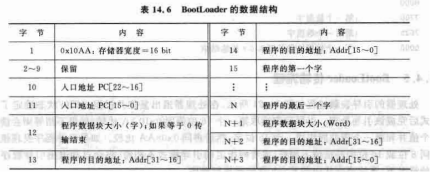

F28xx映射空间概述
F28xx采用增强的哈佛总线结构，能并行访问程序和数据，
片上SRAM
片上Flash
片上OTP
片上BootROM
在软件编译链接过程中，.cmd或DSP/BIOS指定代码段、数据段、堆栈等对象的映射空间。
XINTF接口扩展
存储器接口负责将CPU访问存储器逻辑控制单元同存储器、外设以及其他的接口连接起来。
当访问相应的存储空间时，会产生一个片选信号；XREADY信号来控制外设的访问。
外部接口的访问时钟频率由内部的XTIMCLK提供，
在复位状态下，根据X M P / M C ‾ \rm{XMP/\overline{MC}} XMP/ MC
在微处理器模式X M P / M C ‾ = 1 \rm{XMP/\overline{MC}}=1 XMP/ MC = 1
在微计算机模式X M P / M C ‾ = 0 \rm{XMP/\overline{MC}}=0 XMP/ MC = 0
上电复位时，X M P / M C ‾ \rm{XMP/\overline{MC}} XMP/ MC X M P / M C ‾ \rm{XMP/\overline{MC}} XMP/ MC X M P / M C ‾ \rm{XMP/\overline{MC}} XMP/ MC
XINTF接口操作
扩展空间总共有19位的外部地址总线可用，区分不同空间需要结合片选进行。
F2812的XINTF扩展接口有3个片选引脚，和19位XA引脚一起构成22位的地址。
将F2812定义的各个外部扩展存储地址空间以二进制形式表示：
Zone0和Zone1
Zone0和Zone1的大小皆为8K × 16 bit，
要与其它的扩展空间进行区分，XA[13]与XA[14]构成如此片选逻辑：
Zone2和Zone6
Zone2和Zone6的大小皆为512K ×16 bit，
区分这两个空间可使F2812的片选引脚：X Z C S 2 ‾ \rm{\overline{XZCS2}} XZCS2 X Z C S 6 A N D C S 7 ‾ \rm{\overline{XZCS6ANDCS7}} XZCS6ANDCS7
Zone7
复位时，如果X M P / M C ‾ \rm{XMP/\overline{MC}} XMP/ MC
系统复位后，可以通过改变寄存器XINTCNF2中的X M P / M C ‾ \rm{XMP/\overline{MC}} XMP/ MC
如果X M P / M C ‾ \rm{XMP/\overline{MC}} XMP/ MC
如果需要建立自己的引导程序并存放在外部空间，
Boot ROM映射到Zone7的地址空间时，
举例
Flash
在F2812中，4个8K×16位的段(Sector)和6个16K×16位的段。
Flash特点：
可分多个Sector；
代码安全保护机制CSM；
低功耗模式；
可根据CPU频率调整等待周期；
采用专用的流水线操作
F2812的Flash地址分配
Flash的初始化
cpu访问Flash需要等待一段时间。
因此需要根据实际情况配置合适的等待状态数量。
C环境下如果工作在150MHz，要求最少加入5个等待。
因此实际上还采用了流水线的方式访问Flash（将ENPIPE控制位置1），
Flash初始化需要对以下寄存器进行设置：
1 2 3 4 5 6 7 8 9 10 11 12 13 14 15 16 17 18 19 20 21 22 23 24 #pragma CODE_SECTION(InitFlash, "ramfuncs" ); void InitFlash () { EALLOW; FlashRegs.FOPT.bit.ENPIPE = 1 ; FlashRegs.FBANKWAIT.bit.RANDWAIT = 5 ; FlashRegs.FBANKWAIT.bit.PAGEWAIT = 5 ; FlashRegs.FSTDBYWAIT.bit.STDBYWAIT = 0x01FF ; FlashRegs.FACTIVEWAIT.bit.ACTIVEWAIT = 0x01FF ; EDIS; asm ("RPT # 7 || NOP" ); }
Flash烧录
DSP工作在微计算机(MC)模式下与工作在微处理器(MP)模式下程序的启动地址不同。
在MP模式下，将Relase版本的程序增加一个代码启动文件，.cmd文件使程序的运行空间处于Flash段，.out文件，烧写进DSP。
程序烧写进DSP有多种不同方式：
下面介绍如何通过仿真器烧写。
代码转化
上面提到，DSP281x_CodeStartBranch.asm，.cmd文件各代码和数据段的地址映射和程序的装载起始/结束/运行地址。
关于代码的执行环境可参见“CCS工作流”一章。
C28x启动顺序
通常将DeBug版本的可执行代码装载到内部RAM中（比如H0-SRAM）方便调试，加快速度，
C28x上电后有6种不同的启动模式，
注意，无论采取哪种启动模式，Flash、OTP或H0-SRAM中执行程序。
从Flash开始运行
要使cpu从内部的Flash开始运行，X M P / M C ‾ = 0 \rm{XMP/\overline{MC}}=0 XMP/ MC = 0
系统复位后程序指针跳转到BROM（BOOT ROM）的起始地址0x3F FFC0；
执行BROM中的跳转指令到引导代码首地址0x3F FC00，完成基本的初始化任务与引导模式的选择；
如果F4引脚置高，PC指针直接跳转到0x3F 7FF6（Flash入口地址）。c_int00函数。
cint00函数完成C环境和全局变量的初始化。该段必须放在Flash中。执行完cint00函数后，调用主程序main。
其它启动方式有需要再查看教材。
BOOT ROM基本情况介绍
该段包含了一些常用的数据表（比如三角函数）用以通过查表的方式快速运算，BootLoader。
BootLoader

如果BootLoader接收到无效的特征字会退出装载程序，
第2~9个字用来初始化寄存器的值，或用来改进BootLoader操作，也可以不使用。
第10~11个字构成22位程序入口地址，在Bootloader完成后使用该值初始化PC指针。
数据流中的第12个字表示第一个程序数据块的大小，
接下来的2个字定义程序数据块的目的地址。
每个数据块都按上述格式组织(数据块大小目的地址)，
以上可总结为以下的流程图：
CMD文件
转载链接
一般的，一个工程需要两个CMD文件，
一个是DSP281x_Headers_nonBIOS.cmd或DSP281x_Headers_BIOS.cmd，用于指定各内部寄存器在存储空间中的位置，（这两个文件可在官方例程中获得）
另一个是用户自定义的CMD文件，用于分配程序与数据的空间。（官方例程中也提供了F2812.CMD用于参考）
要注意的是，存储空间与CMD文件没有必然联系，
MEMORY、PAGE和SECTIONS
MEMORY伪指令用来指定实际存在目标系统中的可以使用的地址空间，
在F2812的MEMORY指令中使用如下两个标识用于表明划分的空间类型：
PAGE0用于存放程序空间， PAGE1用于存放数据空间。
SECTIONS伪指令则是用来指定程序与数据的各个段所应该处于的地址空间。
CMD文件里有两个基本段：初始化段和非初始化段。
初始化段包含代码和常数等必须在DSP上电之后有效的量。
非初始化段中含有在程序运行过程中才有的变量，
初始化段：
.text：所有可以执行的代码和常量.cinit:全局变量和静态变量的C初始化记录.const：包含字符串常量和初始化的全局变量和静态变量（const）的初始化和说明.econst：包含字符串常量和初始化的全局变量和静态变量（far const）的初始化和说明.pinit：全局构造器（C++）程序列表.switch：包含switch声明的列表
非初始化段：
.bss: 为全局变量和局部变量保留的空间，在程序上电时.cinit空间中的数据复制出来并存储在.bss空间中。.ebss：为使用大寄存器模式时的全局变量和静态变量预留的空间，在程序上电时，cinit空间中的数据复制出来并存储在.ebss中.stack:为系统堆栈保留的空间，用于和函数传递变量或为局部变量分配空间。.sysmem:为动态存储分配保留的空间。如果有宏函数，此空间被宏函数占用，如果没有的话，此空间保留为0.esysmem:为动态存储分配保留的空间。如果有far函数，此空间被相应的占用，如果没有，此空间保留为0.
查看段的分配及使用情况
链接器的map文件描述以下内容：（该文件在工程编译后生成）
也可以直接打开“Memory Allocation”进行查看。
空间分配流程
上面阐述了TI C2000 芯片分配空间各部分内容，但不够明晰。
创建工程时，一般会使用官方例程的cmd文件作为模板，
比如F2812.cmd文件指定了以下内部RAM空间：
1 2 3 4 5 6 7 8 9 10 11 12 13 14 15 16 17 18 19 20 21 22 23 24 25 MEMORY { PAGE 0 : /*定义程序空间，此处省略*/ PAGE 1 : /*定义数据空间*/ RAMM0 : origin = 0 x000000, length = 0 x000400 /* on-chip RAM block M0 */ RAMM1 : origin = 0 x000400, length = 0 x000400 /* on-chip RAM block M1 */ RAML1 : origin = 0 x009000, length = 0 x001000 /* on-chip RAM block L1 */ /*其余内容省略*/ } SECTIONS { /* 分配非初始化数据段: */ .stack : > RAMM0 PAGE = 1 .ebss : > RAML1 PAGE = 1 .esysmem : > RAMH0 PAGE = 1 /*其余内容省略*/ }
例程中的cmd文件将各外扩存储空间都进行了定义（但没有为其分配至指定的段）段。
比如zone2空间，其指定为origin = 0x080000, length = 0x080000
1 2 3 4 5 6 7 8 9 MEMORY { PAGE 0 : /*定义程序空间，此处省略*/ PAGE 1 : /*定义数据空间*/ ex_space : origin = 0 x080000, length = 0 x080000 /* XINTF zone 2 */ }
然后再为其分配段。
1 2 3 4 SECTIONS { ex_section : > ex_space PAGE = 1 }
既然是数据段，那自然是存放数据的。基本段中。
1 2 3 #pragma DATA_SECTION(variable_name,"ex_section" ); int variable_name;
事实上，程序也可以指定想要存放的段中，
F2812.cmd
该文件在TI公司提供的例程文件夹中。
1 2 3 4 5 6 7 8 9 10 11 12 13 14 15 16 17 18 19 20 21 22 23 24 25 26 27 28 29 30 31 32 33 34 35 36 37 38 39 40 41 42 43 44 45 46 47 48 49 50 51 52 53 54 55 56 57 58 59 60 61 62 63 64 65 66 67 68 69 70 71 72 73 74 75 76 77 78 79 80 81 82 83 84 85 86 87 88 89 90 91 92 93 94 95 96 97 98 99 100 101 102 103 104 105 106 107 108 109 110 111 112 113 114 115 116 117 118 119 120 121 122 /* ====================================================== // For Code Composer Studio V2.2 and later // --------------------------------------- // 除了该内存链接器命令文件外，还需将头文件链接器命令文件直接添加到项目中。 // 因为需要使用头文件链接器命令文件将外设结构链接到内存映射中的适当位置。 // // The header linker files are found in <base>\DSP281x_Headers\cmd // // For BIOS applications add: DSP281x_Headers_nonBIOS.cmd // For nonBIOS applications add: DSP281x_Headers_nonBIOS.cmd ========================================================= */ /* ====================================================== // For Code Composer Studio prior to V2.2 // -------------------------------------- //使用下列 -l 语句之一，在项目中包含头文件链接器命令文件。 //需要使用头文件链接器将外设结构链接到内存映射中的适当位置 /* 仅在非BIOS应用程序中取消注释下面一行*/ /* -l DSP281x_Headers_nonBIOS.cmd */ /* 仅在BIOS应用程序中取消注释下面一行 */ /* -l DSP281x_Headers_BIOS.cmd */ /* 在项目中，将 <base>\DSP281x_headers\cmd 的路径添加到项目->构建选项、链接器选项卡、库搜索路径 (-i) 下的库搜索路径中。 /*========================================================= */ /* 定义 F2812 内存块的起始/长度 PAGE 0 用于组织程序部分 PAGE 1 用于组织数据部分 Notes: F2812 上的内存块在 PAGE 0 和 PAGE 1 都是统一的（即相同的物理内存）。 也就是说，不应该为 PAGE 0 和 PAGE 1 定义相同的内存区域。 这样做会导致程序和/或数据损坏。 */ MEMORY { PAGE 0: /* 程序空间 */ /* (RAM /FLASH /OTP )这些内存块可移至 PAGE1 进行数据空间分配 */ ZONE0 : origin = 0x002000 , length = 0x002000 /* XINTF zone 0 */ ZONE1 : origin = 0x004000 , length = 0x002000 /* XINTF zone 1 */ RAML0 : origin = 0x008000 , length = 0x001000 /* on -chip RAM block L0 */ ZONE2 : origin = 0x080000 , length = 0x080000 /* XINTF zone 2 */ ZONE6 : origin = 0x100000 , length = 0x080000 /* XINTF zone 6 */ OTP : origin = 0x3D7800 , length = 0x000800 /* on -chip OTP */ FLASHJ : origin = 0x3D8000 , length = 0x002000 /* on -chip FLASH */ FLASHI : origin = 0x3DA000 , length = 0x002000 /* on -chip FLASH */ FLASHH : origin = 0x3DC000 , length = 0x004000 /* on -chip FLASH */ FLASHG : origin = 0x3E0000 , length = 0x004000 /* on -chip FLASH */ FLASHF : origin = 0x3E4000 , length = 0x004000 /* on -chip FLASH */ FLASHE : origin = 0x3E8000 , length = 0x004000 /* on -chip FLASH */ FLASHD : origin = 0x3EC000 , length = 0x004000 /* on -chip FLASH */ FLASHC : origin = 0x3F0000 , length = 0x004000 /* on -chip FLASH */ FLASHA : origin = 0x3F6000 , length = 0x001F80 /* on -chip FLASH */ CSM_RSVD : origin = 0x3F7F80 , length = 0x000076 /* FLASHA 的一部分。当使用 CSM 时，使用全部 0x0000 进行编程。 */ BEGIN : origin = 0x3F7FF6 , length = 0x000002 /* FLASHA 的一部分。用于 "启动到闪存 "引导加载器模式。 */ CSM_PWL : origin = 0x3F7FF8 , length = 0x000008 /* FLASHA 的一部分。 FLASHA 的 CSM 密码位置*/ /* ZONE7 : origin = 0x3FC000 , length = 0x003FC0 /* 如果MP /MCn =1 ，启用 XINTF zone 7 */ ROM : origin = 0x3FF000 , length = 0x000FC0 /* 如果MP /MCn =0，启用 Boot ROM */ RESET : origin = 0x3FFFC0 , length = 0x000002 /* boot ROM 或XINTF zone 7 的一部分*/ VECTORS : origin = 0x3FFFC2 , length = 0x00003E /* boot ROM 或XINTF zone 7 的一部分 */ PAGE 1 : /* 数据空间 */ /* (RAM /FLASH /OTP )这些内存块可移至 PAGE0 进行程序空间分配 */ /* 寄存器保留在 PAGE1 */ RAMM0 : origin = 0x000000 , length = 0x000400 /* on -chip RAM block M0 */ RAMM1 : origin = 0x000400 , length = 0x000400 /* on -chip RAM block M1 */ RAML1 : origin = 0x009000 , length = 0x001000 /* on -chip RAM block L1 */ FLASHB : origin = 0x3F4000 , length = 0x002000 /* on -chip FLASH */ RAMH0 : origin = 0x3F8000 , length = 0x002000 /* on -chip RAM block H0 */ } /* 为内存块分配区段 Note : DSP28_CodeStartBranch.asm 中的 codestart 用户定义部分，用于在启动到Flash 时重定向代码执行 ramfuncs 用户定义部分，用于存储将从闪存复制到 RAM 中的函数 */ SECTIONS { /* 分配程序空间： */ .cinit : > FLASHA PAGE = 0 .pinit : > FLASHA , PAGE = 0 .text : > FLASHA PAGE = 0 codestart : > BEGIN PAGE = 0 ramfuncs : LOAD = FLASHD , RUN = RAML0 , LOAD_START (_RamfuncsLoadStart ), LOAD_END (_RamfuncsLoadEnd ), RUN_START (_RamfuncsRunStart ), PAGE = 0 csmpasswds : > CSM_PWL PAGE = 0 csm_rsvd : > CSM_RSVD PAGE = 0 /* 分配非初始化数据段: */ .stack : > RAMM0 PAGE = 1 .ebss : > RAML1 PAGE = 1 .esysmem : > RAMH0 PAGE = 1 /* 转入Flash 的初始化段 */ /* 要对 SDFlash 进行编程，必须将它们分配到第 0 页 */ .econst : > FLASHA PAGE = 0 .switch : > FLASHA PAGE = 0 /* 分配IQ math 区域: */ IQmath : > FLASHC PAGE = 0 /* Math Code */ IQmathTables : > ROM PAGE = 0, TYPE = NOLOAD /* Math Tables In ROM */ // .reset 是编译器使用的标准部分。 它包含 C 代码 _c_int00 的起始地址。 // 使用引导 ROM 时，不需要该部分和 CPU 向量表。 因此这里的默认类型设置为 DSECT .reset : > RESET , PAGE = 0, TYPE = DSECT vectors : > VECTORS PAGE = 0, TYPE = DSECT }
DSP281x_CodeStartBranch.asm
1 2 3 4 5 6 7 8 9 10 11 12 13 14 15 16 17 18 19 20 21 22 23 24 25 26 27 28 29 30 31 32 33 34 35 36 37 38 39 40 41 42 43 44 45 46 47 48 49 50 51 52 53 54 55 56 *********************************************************************** ;//########################################################################### ;// FILE: DSP281x_CodeStartBranch.asm ;// ;// TITLE: BOOT后跳转到代码执行地址入口处。 ;//########################################################################### *********************************************************************** WD_DISABLE .set 1 ;设为 1 可禁用 WatchDog，否则设为 0 .ref _c_int00 *********************************************************************** * Function: 代码起始段 * * Description: 跳转到代码起始地址入口 *********************************************************************** .sect "codestart" code_start: .if WD_DISABLE == 1 LB wd_disable ;跳转到watchdog禁止代码 .else LB _c_int00 ;跳转到RTS(rts2800_ml.lib)中的boot.asm起始位置 .endif ;end codestart section *********************************************************************** * Function: wd_disable * * Description: 禁止watchdog定时器 *********************************************************************** .if WD_DISABLE == 1 .text wd_disable: SETC OBJMODE ;Set OBJMODE for 28x object code EALLOW ;Enable EALLOW protected register access MOVZ DP, #7029h>>6 ;Set data page for WDCR register MOV @7029h, #0068h ;Set WDDIS bit in WDCR to disable WD EDIS ;Disable EALLOW protected register access LB _c_int00 ;Branch to start of boot.asm in RTS library .endif ;end wd_disable .end ; end of file CodeStartBranch.asm